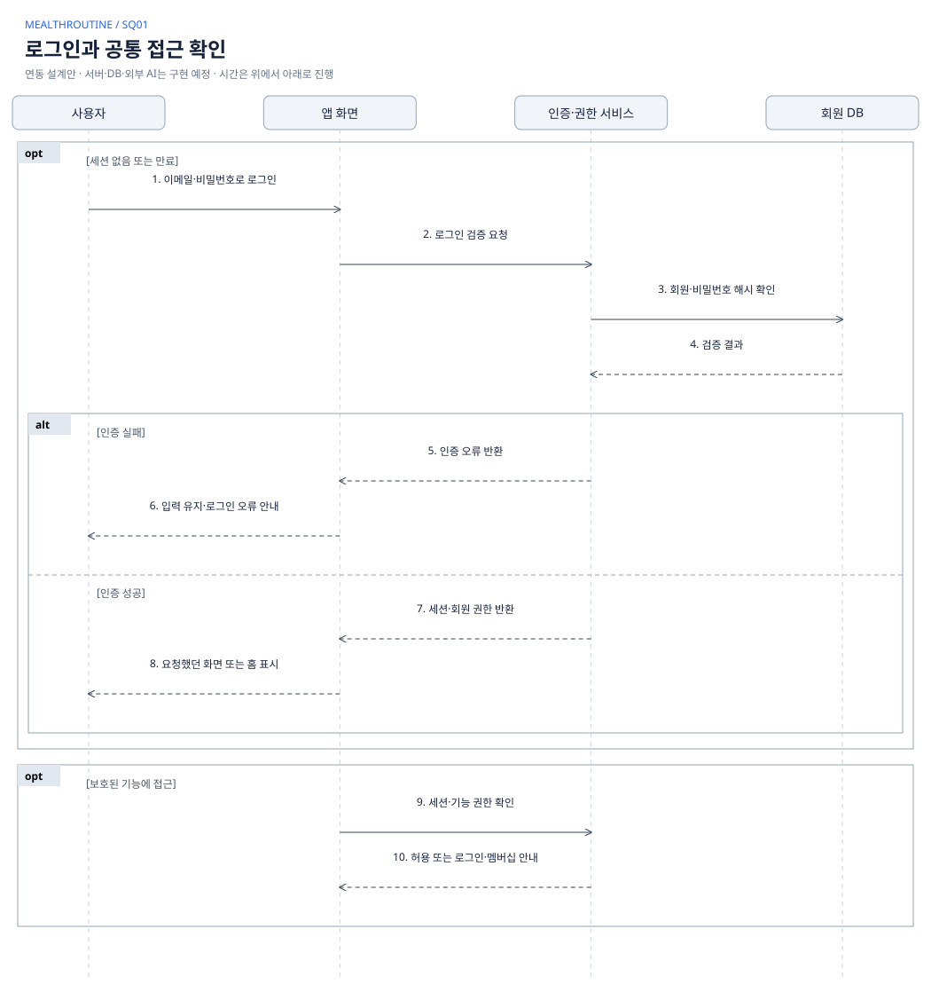
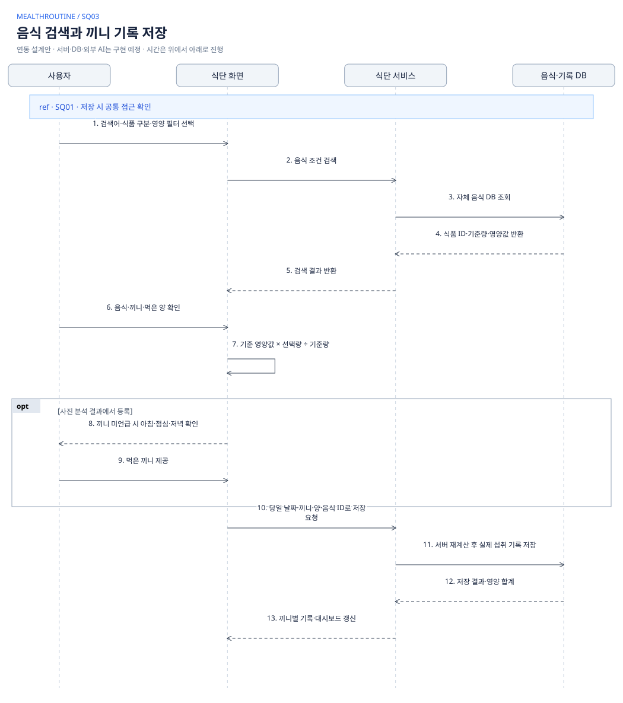
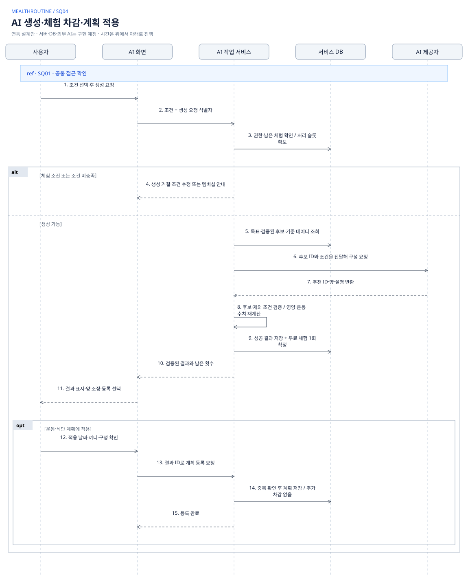
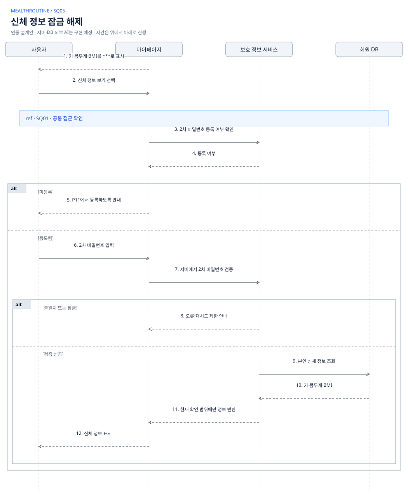
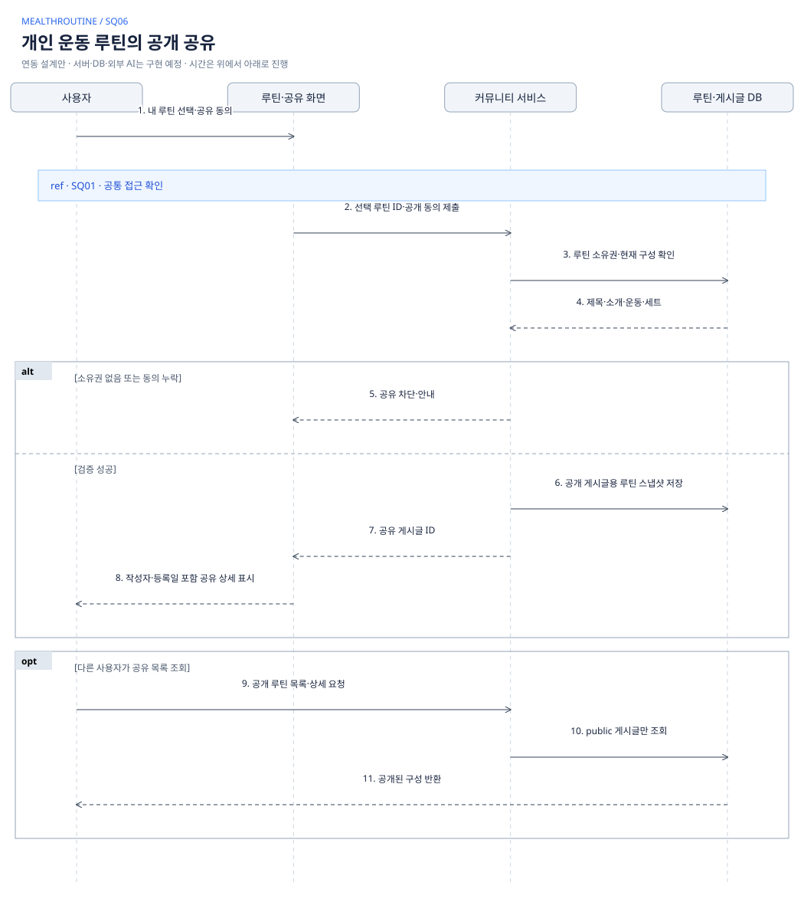
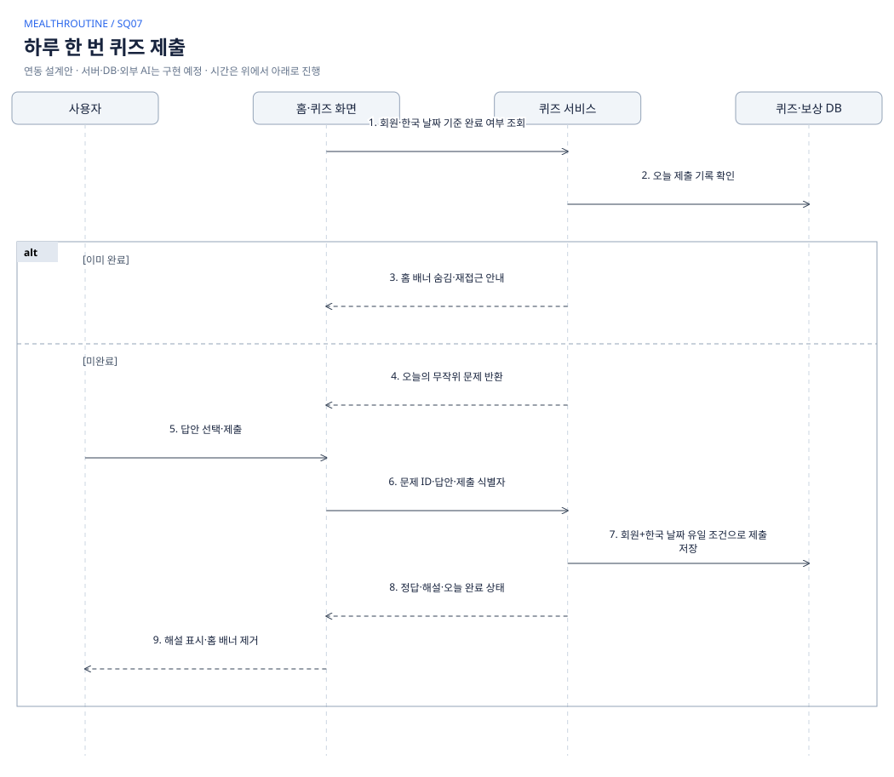
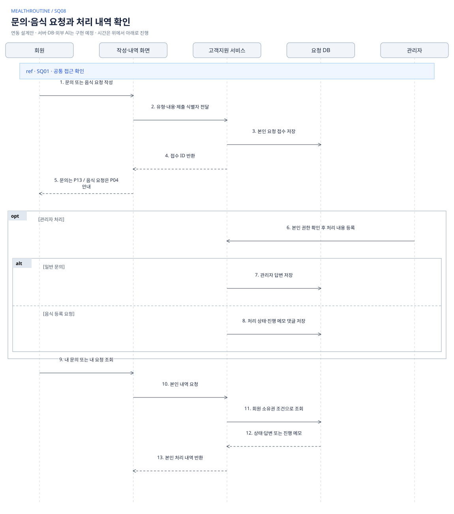

이번 문서의 범위
페이지마다 다이어그램을 만들지 않고, 하나의 목적을 완료하는 업무 단위로 묶었습니다. 화면 ID는 추적용 태그로만 표시합니다. 공통 접근 확인은 SQ01을 참조합니다.
화면·분기·등록 UX는 현재 스토리보드를 근거로 합니다. 그림의 인증 서비스·서버·DB·AI 제공자는 향후 연동을 위한 논리적 역할이며 실제 구현 완료 상태를 의미하지 않습니다. 현재 시안은 브라우저 메모리·일부 로컬 저장과 고정/계산 예시로 동작합니다.
실선: 요청·처리 / 점선: 응답 / 세로 점선: 참여자 생명선 / alt: 상호 배타 분기 / opt: 선택 처리 / loop: 반복 / ref: 공통 흐름 참조. ref는 공통 처리 흐름을 참조합니다.
IBM · 공통 상호작용 참조와 Visual Paradigm · 시나리오·조건 프레임를 참고했습니다. 재사용 처리와 성공·실패 경로를 나누는 표기 원칙을 적용했습니다.
화면 전환·드롭다운·하단 메뉴·단순 알림 읽음 등은 별도 시퀀스로 반복하지 않습니다. 실제 결제·보상 지급은 정책이 확정되지 않아 트랜잭션을 만들어 넣지 않았습니다.
로그인과 공통 접근 확인

완료 조건
세션을 가진 사용자가 허용된 기능에 접근한다. 로그인 자체에 2차 비밀번호를 요구하지 않는다.
검증·예외
세션 만료는 로그인, AI 신규 생성 체험 소진은 멤버십 안내. 이미 생성된 마지막 결과 조회·등록은 허용한다.

운동 목록 수행과 결과 저장

완료 조건
운동을 완료한 실제 값이 기록에 저장되고 대시보드가 운동 후 상태로 바뀐다.
검증·예외
내일 목록은 구성·검토만 허용. 일시정지는 운동 시간에서 제외. 미완료 세트는 실제 완료로 저장하지 않으며 중복 저장 요청은 같은 결과를 반환한다.
음식 검색과 끼니 기록 저장

완료 조건
당일의 선택한 끼니에 실제 섭취 기록을 저장한다. 사진 분석 등록은 추정값으로 구분한다.
검증·예외
검색 결과 없음은 조건 수정·음식 등록 요청으로 안내. 영양 미확인과 0 구분, g/ml 임의 변환 금지. AI 식단 추천은 실제 기록이 아닌 내일 계획에 저장한다.

AI 생성·체험 차감·계획 적용

완료 조건
공통 AI 생성 정책으로 권한·작업 중복·완료 시 차감을 통제한다. 기록과 계획 적용은 분리한다.
검증·예외
실패·취소·유효하지 않은 AI 응답은 차감하지 않는다. 확보한 처리 슬롯은 실패 시 해제하며 횟수 차감으로 간주하지 않는다. 다섯 번째 성공 결과도 조회·등록 가능. 동시 요청은 서버 원자 처리 필요.

신체 정보 잠금 해제

완료 조건
민감한 신체 정보 확인 시점에만 2차 비밀번호를 사용한다.
검증·예외
비밀번호 원문·PIN을 응답이나 로그에 남기지 않는다. 숨김 복귀·허용 시간·서버 세션 정책은 운영 구현 시 확정. 현재는 브라우저 시안이다.

개인 운동 루틴의 공개 공유

완료 조건
개인 루틴의 기본 비공개 상태와 공개 게시글을 구분한다.
검증·예외
공유되지 않은 개인 루틴은 공개 조회 금지. 공개 스냅샷에 신체 정보·인증 정보 포함 금지. 편집 시 원본과 게시글의 동기화 정책은 미확정이다.

SQ07 하루 한 번 퀴즈 제출 — 보조 흐름 펼치기
하루 한 번 퀴즈 제출

완료 조건
정오답과 관계없이 하루 한 번 제출을 완료한다.
검증·예외
동시·중복 제출 방지. 다음 한국 날짜 재참여. 포인트·경험치 지급 정책은 확정되지 않았으므로 이 다이어그램에 지급 처리를 넣지 않는다.

SQ08 문의·음식 요청과 처리 내역 확인 — 보조 흐름 펼치기
문의·음식 요청과 처리 내역 확인

완료 조건
문의 작성 S02와 상태 조회 P13을 분리한다. 음식 등록 요청과 일반 문의는 별개 목록이다.
검증·예외
관리자 인증·쓰기 UI는 현재 스토리보드 범위 밖의 연동 설계. 포인트 지급 감사 문구는 시안 예시이며 실제 지급 트랜잭션은 별도 정책 확정 후 설계한다.